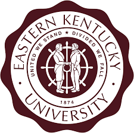
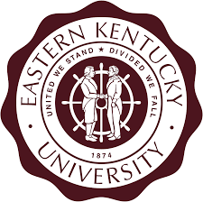

Amanda Raybuck
My Education
In 2004 I graduated with my undergraduate degree in Early Childhood Education from the University of Cincinnati. In 2011, I graduated with a masters degree in Special Education from the University of Cincinnati as well. Recently, I began a 2nd masters degree in Library Science from Eastern Kentucky University. I am projected to graduate in December of 2024.
 

My School
I currently teach 3rd grade at Beechwood Elementary.I started teaching at Beechwood in 2014 and just finished my 10th year teaching there. The first 8 years I was at Beechwood, I taught 1st grade and the last two years I made the switch to 3rd grade. It was a great decision. Prior to teaching at Beechwood, I taught in the Forest Hills School District for 10 years, teaching 1st grade. I just finished my 20th year of teaching.